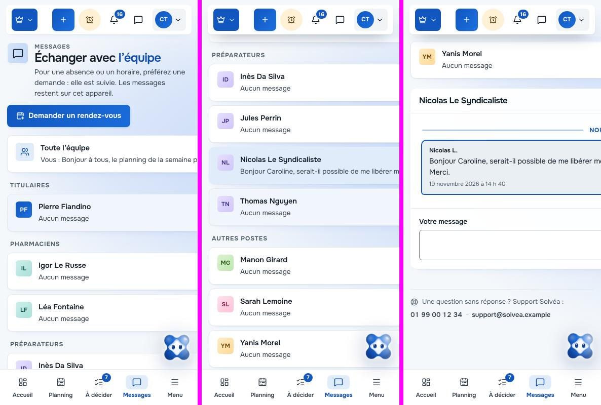
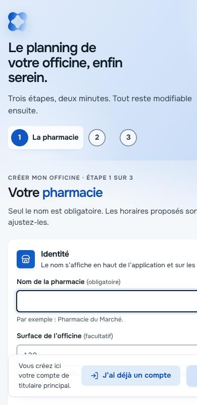
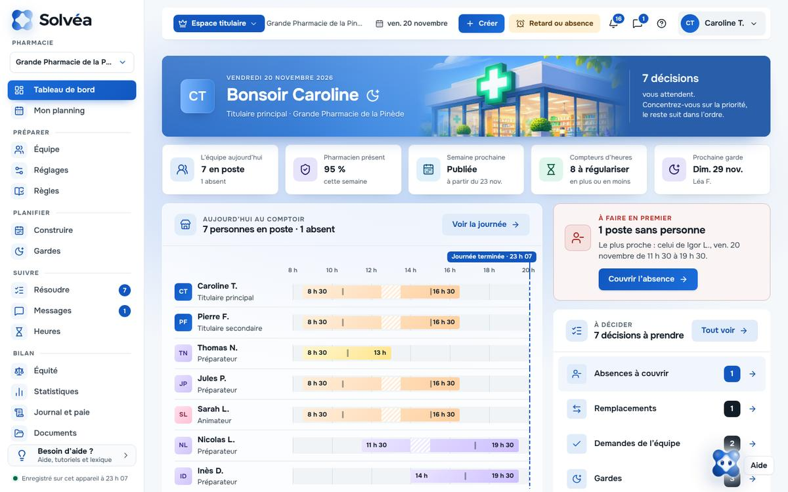
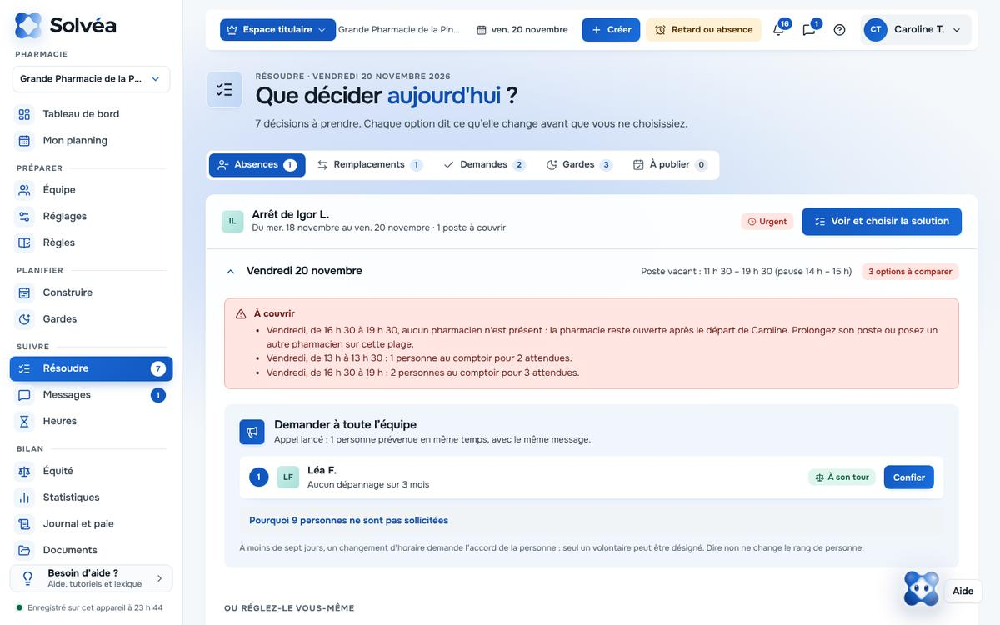
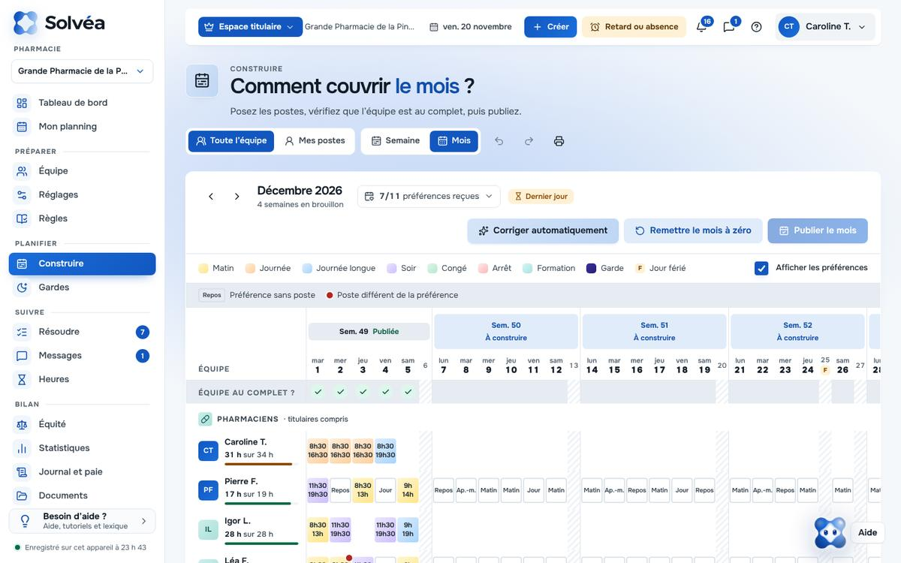
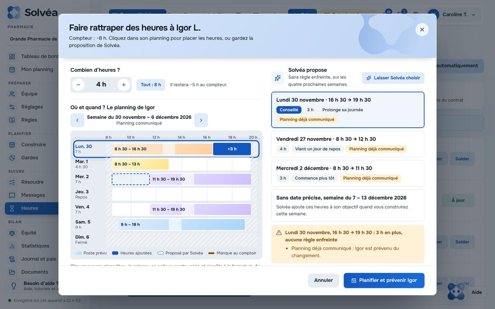
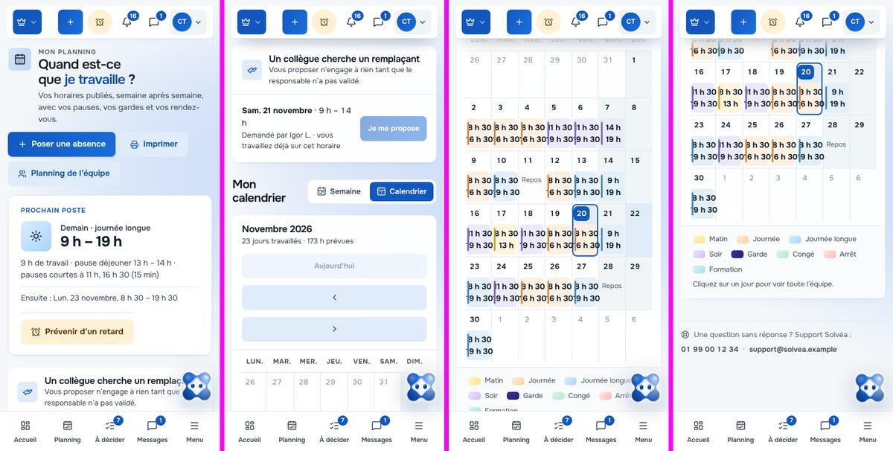
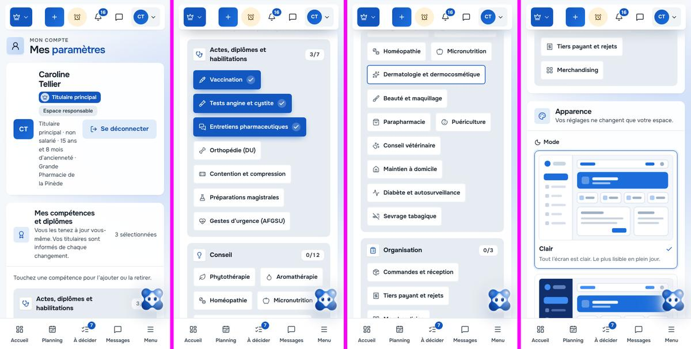
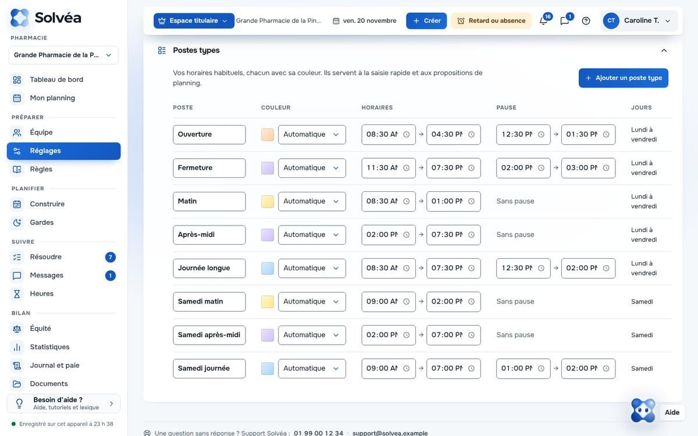
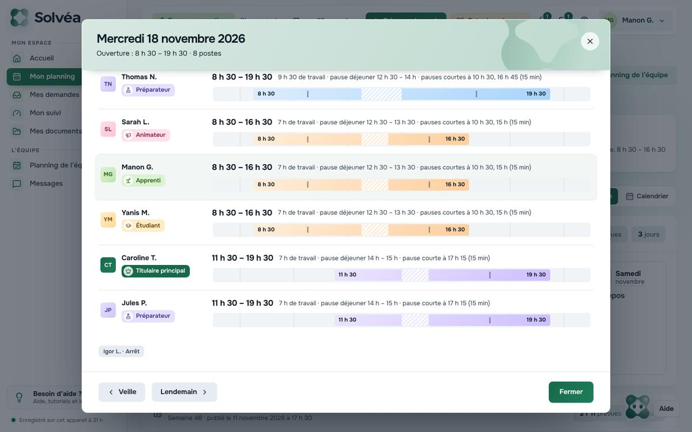

<title>Audit Solvéa</title>
<meta name="claude:viewport-fit-sides" content="cover">
<link rel="preconnect" href="https://fonts.googleapis.com">
<link rel="preconnect" href="https://fonts.gstatic.com" crossorigin>
<link rel="stylesheet" href="https://fonts.googleapis.com/css2?family=Inter:wght@400;500;600;700&family=Source+Serif+4:opsz,wght@8..60,500;8..60,600;8..60,700&family=JetBrains+Mono:wght@400;500&display=swap">
<style>
:root{
  --bg:#f5f4ef; --surface:#ffffff; --surface2:#faf9f6; --ink:#1b2220; --muted:#5a6561; --faint:#848d89; --line:#e3e1da; --line2:#d3d0c7;
  --accent:#0e6b57; --accent-ink:#ffffff; --accent-soft:#e1f0ea;
  --band:#0d3a30; --band-ink:#eef6f2; --band-muted:#a9c9be;
  --bloq:#b42318; --bloq-bg:#fde7e4; --maj:#b9520a; --maj-bg:#fdeddb; --min:#7d6400; --min-bg:#f8f0c9;
  --cos:#46598a; --cos-bg:#e7ebf5; --ok:#1b7442; --ok-bg:#e0f2e6; --neu:#5f6865; --neu-bg:#ecebe6;
  --flash:#fff3b0; --shadow:0 1px 2px rgba(20,30,25,.06),0 4px 14px rgba(20,30,25,.05);
  --serif:"Source Serif 4",Georgia,"Times New Roman",serif; --sans:Inter,system-ui,-apple-system,"Segoe UI",Roboto,sans-serif; --mono:"JetBrains Mono",ui-monospace,SFMono-Regular,Menlo,Consolas,monospace;
}
@media (prefers-color-scheme:dark){:root:not([data-theme="light"]){
  --bg:#101413; --surface:#181e1c; --surface2:#151a19; --ink:#e6ebe8; --muted:#a0aaa6; --faint:#7d8783; --line:#29312e; --line2:#36403c;
  --accent:#5cc6a6; --accent-ink:#0b1f19; --accent-soft:#16352c;
  --band:#0a231d; --band-ink:#e6f2ec; --band-muted:#8fb3a7;
  --bloq:#ff8b7c; --bloq-bg:#3b1915; --maj:#ffab62; --maj-bg:#382312; --min:#e4c64e; --min-bg:#302c10;
  --cos:#a3b5e8; --cos-bg:#1e2640; --ok:#6fd49b; --ok-bg:#14301f; --neu:#a6adaa; --neu-bg:#232a28;
  --flash:#4a4313; --shadow:0 1px 2px rgba(0,0,0,.3); color-scheme:dark}}
:root[data-theme="dark"]{
  --bg:#101413; --surface:#181e1c; --surface2:#151a19; --ink:#e6ebe8; --muted:#a0aaa6; --faint:#7d8783; --line:#29312e; --line2:#36403c;
  --accent:#5cc6a6; --accent-ink:#0b1f19; --accent-soft:#16352c;
  --band:#0a231d; --band-ink:#e6f2ec; --band-muted:#8fb3a7;
  --bloq:#ff8b7c; --bloq-bg:#3b1915; --maj:#ffab62; --maj-bg:#382312; --min:#e4c64e; --min-bg:#302c10;
  --cos:#a3b5e8; --cos-bg:#1e2640; --ok:#6fd49b; --ok-bg:#14301f; --neu:#a6adaa; --neu-bg:#232a28;
  --flash:#4a4313; --shadow:0 1px 2px rgba(0,0,0,.3); color-scheme:dark}
*{box-sizing:border-box}
html{scroll-behavior:smooth}
body{background:var(--bg);color:var(--ink);font:15px/1.55 var(--sans);-webkit-font-smoothing:antialiased}
body::before{content:"";position:fixed;inset:0 0 auto;height:env(safe-area-inset-top,0px);background:var(--band);z-index:30}
a{color:var(--accent)}
h1,h2,h3,h4{font-family:var(--serif);text-wrap:balance;margin:0;letter-spacing:-.01em}
.gut{padding-left:max(16px,env(safe-area-inset-left,0px));padding-right:max(16px,env(safe-area-inset-right,0px))}
.wrap{max-width:1240px;margin:0 auto}
.lisible{max-width:72ch}

/* bandeau */
.tete{background:var(--band);color:var(--band-ink);padding-block:44px 34px}
.sur{font:600 12px/1.4 var(--sans);letter-spacing:.09em;text-transform:uppercase;color:var(--band-muted);margin:0 0 10px}
.tete h1{font-size:clamp(34px,5vw,52px);font-weight:700;line-height:1.05}
.chapeau{margin:14px 0 0;font-size:17px;line-height:1.55;color:var(--band-ink);opacity:.92;max-width:70ch}
.kpi{display:grid;grid-template-columns:repeat(6,minmax(0,1fr));gap:10px;margin:28px 0 0;padding:0;list-style:none}
.kpi li{background:rgba(255,255,255,.07);border:1px solid rgba(255,255,255,.12);border-radius:10px;padding:12px 14px;min-width:0}
.kpi b{display:block;font:700 28px/1.1 var(--serif)}
.kpi span{font-size:12.5px;color:var(--band-muted)}
.kpi .k-bloq b{color:#ff9d90}.kpi .k-maj b{color:#ffb878}.kpi .k-min b{color:#f0d466}.kpi .k-cos b{color:#b8c6ee}.kpi .k-ok b{color:#86e0ad}
.sommaire{display:flex;flex-wrap:wrap;gap:6px 18px;margin:24px 0 0;padding:0;list-style:none;font-size:14px}
.sommaire a{color:var(--band-ink);text-decoration:none;border-bottom:1px solid rgba(255,255,255,.3);padding-bottom:1px}
.sommaire a:hover{border-color:var(--band-ink)}

main{padding-block:12px 80px}
section.bloc{padding-top:48px}
section.bloc>h2{font-size:clamp(25px,3vw,32px);font-weight:700;margin-bottom:6px}
.intro{color:var(--muted);margin:0 0 22px}
p{margin:0 0 12px}

/* en bref */
.bref{display:grid;grid-template-columns:minmax(0,1.35fr) minmax(0,1fr);gap:28px;align-items:start}
.bref ol{margin:0;padding-left:22px}
.bref ol li{margin-bottom:10px}
.carte{background:var(--surface);border:1px solid var(--line);border-radius:12px;padding:20px 22px;box-shadow:var(--shadow)}
.carte h3{font-size:19px;margin-bottom:10px}
.echelle{list-style:none;margin:0;padding:0;font-size:14px}
.echelle li{display:flex;gap:10px;align-items:baseline;padding:7px 0;border-top:1px solid var(--line)}
.echelle li:first-child{border-top:0}

/* pastilles */
.pg{display:inline-flex;align-items:center;font:600 11.5px/1 var(--sans);letter-spacing:.02em;padding:4px 8px;border-radius:999px;white-space:nowrap;background:var(--neu-bg);color:var(--neu)}
.pg.Bloquant{background:var(--bloq-bg);color:var(--bloq)}
.pg.Majeur{background:var(--maj-bg);color:var(--maj)}
.pg.Mineur{background:var(--min-bg);color:var(--min)}
.pg.Cosmétique{background:var(--cos-bg);color:var(--cos)}
.pg.ok{background:var(--ok-bg);color:var(--ok)}
.pg.ligne{background:transparent;border:1px solid var(--line2);color:var(--muted);font-weight:500;white-space:normal;max-width:100%}
.ref{font:500 12px/1 var(--mono);color:var(--accent);text-decoration:none;background:var(--accent-soft);padding:3px 6px;border-radius:5px;white-space:nowrap}
.ref:hover{text-decoration:underline}

/* priorités */
.prio{display:grid;grid-template-columns:repeat(2,minmax(0,1fr));gap:16px}
.prio article{background:var(--surface);border:1px solid var(--line);border-radius:12px;padding:20px 22px 16px;box-shadow:var(--shadow);min-width:0;border-top:4px solid var(--maj)}
.prio article.b{border-top-color:var(--bloq)}
.prio .num{font:600 12px/1 var(--mono);color:var(--faint)}
.prio h3{font-size:20px;margin:6px 0 6px}
.prio .pourquoi{color:var(--muted);font-size:14px;margin-bottom:10px}
.prio ul{margin:0;padding:0;list-style:none}
.prio li{padding:8px 0;border-top:1px solid var(--line);font-size:14.2px;line-height:1.5}
.prio li .ref{margin-left:4px}

/* fonctionne */
.ok-grille{display:grid;grid-template-columns:repeat(3,minmax(0,1fr));gap:14px}
.ok-grille div{background:var(--surface);border:1px solid var(--line);border-left:4px solid var(--ok);border-radius:10px;padding:14px 16px;font-size:14.2px;min-width:0}
.ok-grille h3{font:600 15px/1.3 var(--sans);margin-bottom:6px}

/* images */
.galerie{display:grid;grid-template-columns:repeat(2,minmax(0,1fr));gap:18px}
.galerie figure{margin:0;background:var(--surface);border:1px solid var(--line);border-radius:12px;overflow:hidden;min-width:0}
.galerie a.img{display:block;background:var(--surface2);border-bottom:1px solid var(--line)}
.galerie img{display:block;width:100%;height:auto;max-height:420px;object-fit:contain}
.galerie figcaption{padding:12px 16px 14px;font-size:14px}
.galerie figcaption b{display:block;margin-bottom:3px}

/* page par page */
.filtres{position:sticky;top:env(safe-area-inset-top,0px);z-index:20;background:color-mix(in srgb,var(--bg) 92%,transparent);backdrop-filter:blur(8px);-webkit-backdrop-filter:blur(8px);border-bottom:1px solid var(--line);padding-block:12px;margin:0 0 22px}
.f-l1{display:flex;flex-wrap:wrap;gap:10px;align-items:center}
.f-l2{display:flex;flex-wrap:wrap;gap:6px 14px;align-items:center;margin-top:10px}
.champ{flex:1 1 260px;min-width:0;position:relative}
.champ input{width:100%;font:inherit;font-size:15px;padding:9px 12px 9px 34px;border:1px solid var(--line2);border-radius:9px;background:var(--surface);color:var(--ink)}
.champ svg{position:absolute;left:11px;top:50%;transform:translateY(-50%);color:var(--faint)}
select{font:inherit;font-size:14px;padding:8px 10px;border:1px solid var(--line2);border-radius:9px;background:var(--surface);color:var(--ink);max-width:100%}
.seg{display:inline-flex;border:1px solid var(--line2);border-radius:9px;overflow:hidden;background:var(--surface)}
.seg button{font:500 13.5px/1 var(--sans);padding:9px 12px;border:0;background:transparent;color:var(--muted);cursor:pointer}
.seg button+button{border-left:1px solid var(--line2)}
.seg button[aria-pressed="true"]{background:var(--accent);color:var(--accent-ink)}
.puces{display:flex;flex-wrap:wrap;gap:6px}
.puce{font:600 12.5px/1 var(--sans);padding:7px 10px;border-radius:999px;border:1px solid var(--line2);background:var(--surface);color:var(--faint);cursor:pointer}
.puce[aria-pressed="true"].Bloquant{background:var(--bloq-bg);color:var(--bloq);border-color:transparent}
.puce[aria-pressed="true"].Majeur{background:var(--maj-bg);color:var(--maj);border-color:transparent}
.puce[aria-pressed="true"].Mineur{background:var(--min-bg);color:var(--min);border-color:transparent}
.puce[aria-pressed="true"].Cosmétique{background:var(--cos-bg);color:var(--cos);border-color:transparent}
.puce[aria-pressed="true"].Aucune{background:var(--neu-bg);color:var(--neu);border-color:transparent}
.puce[aria-pressed="false"]{text-decoration:line-through}
.compteur{font-size:13px;color:var(--muted);margin-left:auto}
.raz{font:500 13px/1 var(--sans);background:none;border:0;color:var(--accent);cursor:pointer;padding:6px 0;text-decoration:underline}
#aller{display:none;flex:1 1 100%}

.pp{display:grid;grid-template-columns:250px minmax(0,1fr);gap:28px;align-items:start}
.nav{position:sticky;top:calc(env(safe-area-inset-top,0px) + 118px);max-height:calc(100vh - 140px);overflow:auto;font-size:13.5px;padding-right:4px}
.nav h4{font:600 11.5px/1.3 var(--sans);letter-spacing:.08em;text-transform:uppercase;color:var(--faint);margin:16px 0 4px}
.nav h4:first-child{margin-top:0}
.nav a{display:flex;justify-content:space-between;gap:8px;padding:5px 8px;border-radius:6px;color:var(--ink);text-decoration:none}
.nav a:hover{background:var(--surface)}
.nav a.vide{opacity:.4}
.nav a i{font:500 11.5px/1.6 var(--mono);font-style:normal;color:var(--faint)}
.nav a i.b{color:var(--bloq);font-weight:700}

.page{scroll-margin-top:130px;margin-bottom:40px}
.page>header{border-bottom:2px solid var(--ink);padding-bottom:10px;margin-bottom:14px}
.page .grp{font:600 11.5px/1.3 var(--sans);letter-spacing:.08em;text-transform:uppercase;color:var(--accent);margin:0 0 4px}
.page h3{font-size:clamp(22px,2.6vw,27px);font-weight:700}
.page .bilan{display:flex;flex-wrap:wrap;gap:6px;margin-top:9px}
.sstitre{font:600 12px/1.3 var(--sans);letter-spacing:.08em;text-transform:uppercase;color:var(--muted);margin:18px 0 8px}

.it{scroll-margin-top:130px;background:var(--surface);border:1px solid var(--line);border-left:4px solid var(--neu);border-radius:9px;padding:12px 16px 12px 14px;margin-bottom:9px}
.it.Bloquant{border-left-color:var(--bloq)}.it.Majeur{border-left-color:var(--maj)}.it.Mineur{border-left-color:var(--min)}.it.Cosmétique{border-left-color:var(--cos)}
.it .meta{display:flex;flex-wrap:wrap;gap:5px;align-items:center;margin-bottom:6px}
.it .meta .ref{margin-left:auto;background:transparent;color:var(--faint);padding:0}
.it h5{font:600 15px/1.4 var(--sans);margin:0 0 4px}
.it .det{margin:0;font-size:14.4px;line-height:1.55;overflow-wrap:anywhere}
.it .scen{margin:6px 0 0;font-size:13.4px;color:var(--muted);overflow-wrap:anywhere}
.it .pied{margin:7px 0 0;font-size:12px;color:var(--faint);overflow-wrap:anywhere}
.it .pied code{font-family:var(--mono);font-size:11.5px}
.it code,.okl code{font-family:var(--mono);font-size:.9em;background:var(--surface2);border:1px solid var(--line);padding:0 4px;border-radius:4px}
.it.flash{animation:flash 2.2s ease-out}
@keyframes flash{0%,40%{background:var(--flash)}100%{background:var(--surface)}}

details.okb{background:var(--surface2);border:1px solid var(--line);border-radius:9px;margin-top:14px}
details.okb>summary{cursor:pointer;padding:11px 14px;font-weight:600;font-size:14px;color:var(--ok);list-style:none;display:flex;gap:8px;align-items:center}
details.okb>summary::-webkit-details-marker{display:none}
details.okb>summary::before{content:"";width:7px;height:7px;border-right:2px solid currentColor;border-bottom:2px solid currentColor;transform:rotate(-45deg);transition:transform .15s}
details.okb[open]>summary::before{transform:rotate(45deg)}
.okl{list-style:none;margin:0;padding:0 14px 8px}
.okl li{scroll-margin-top:130px;padding:9px 0;border-top:1px solid var(--line);font-size:13.8px;line-height:1.5;overflow-wrap:anywhere}
.okl li b{font-weight:600}
.okl li .s{color:var(--muted)}
.okl li.flash{animation:flash2 2.2s ease-out}
@keyframes flash2{0%,40%{background:var(--flash)}100%{background:transparent}}
.vide-msg{color:var(--muted);font-style:italic;padding:30px 0}

/* non testé et méthode */
.nt{columns:2;column-gap:28px;padding-left:18px;margin:0}
.nt li{break-inside:avoid;margin-bottom:10px;font-size:14px}
.nt li small{display:block;color:var(--faint);font-size:12px}
.tab{overflow-x:auto;border:1px solid var(--line);border-radius:10px;background:var(--surface)}
table{border-collapse:collapse;width:100%;font-size:14px;min-width:620px}
th,td{text-align:left;padding:10px 14px;border-top:1px solid var(--line);vertical-align:top}
th{font:600 12px/1.3 var(--sans);letter-spacing:.06em;text-transform:uppercase;color:var(--muted);border-top:0;background:var(--surface2)}
td.n{font-family:var(--mono);font-size:13px;white-space:nowrap}
.note{font-size:13.5px;color:var(--muted)}
footer{border-top:1px solid var(--line);padding-block:24px 40px;color:var(--faint);font-size:13px}

@media (max-width:1100px){.kpi{grid-template-columns:repeat(3,minmax(0,1fr))}.ok-grille{grid-template-columns:repeat(2,minmax(0,1fr))}}
@media (max-width:980px){
  .pp{grid-template-columns:minmax(0,1fr)}
  .nav{display:none}
  #aller{display:block}
  .bref{grid-template-columns:minmax(0,1fr)}
  .prio,.galerie{grid-template-columns:minmax(0,1fr)}
}
@media (max-width:640px){
  .tete{padding-block:32px 26px}
  .kpi{grid-template-columns:repeat(2,minmax(0,1fr))}
  .ok-grille{grid-template-columns:minmax(0,1fr)}
  .nt{columns:1}
  .compteur{margin-left:0;flex-basis:100%}
  .f-l2{gap:8px}
  .filtres{position:static}
  .page,.it,.okl li{scroll-margin-top:16px}
}
@media (prefers-reduced-motion:reduce){html{scroll-behavior:auto}.it.flash,.okl li.flash{animation:none;outline:2px solid var(--accent)}}
</style>

<header class="tete gut">
  <div class="wrap">
    <p class="sur">Audit complet · version 62 publiée · 21 novembre 2026</p>
    <h1>Audit de Solvéa</h1>
    <p class="chapeau">Ce qui fonctionne, ce qui ne fonctionne pas, et chaque défaut d’interface, d’ergonomie et de lisibilité, chaque répétition, chaque doublon et chaque incohérence, rangés écran par écran. L’application n’a pas été modifiée pendant l’audit.</p>
    <ul class="kpi" id="kpi">
      <li class="k-bloq"><b data-k="Bloquant">5</b><span>bloquants</span></li>
      <li class="k-maj"><b data-k="Majeur">179</b><span>majeurs</span></li>
      <li class="k-min"><b data-k="Mineur">432</b><span>mineurs</span></li>
      <li class="k-cos"><b data-k="Cosmétique">162</b><span>cosmétiques</span></li>
      <li class="k-ok"><b data-k="ok">326</b><span>fonctions qui marchent</span></li>
      <li><b data-k="tout">1 244</b><span>constats au total, 51 écrans</span></li>
    </ul>
    <ul class="sommaire">
      <li><a href="#bref">En bref</a></li>
      <li><a href="#priorites">Les priorités</a></li>
      <li><a href="#fonctionne">Ce qui fonctionne</a></li>
      <li><a href="#images">En images</a></li>
      <li><a href="#pages">Page par page</a></li>
      <li><a href="#nontest">Non testé</a></li>
      <li><a href="#methode">Méthode</a></li>
    </ul>
  </div>
</header>

<main class="gut">
<div class="wrap">

<section class="bloc" id="bref">
  <h2>En bref</h2>
  <div class="bref">
    <div class="lisible">
      <p>Sur la pharmacie d’exemple, la plupart des parcours aboutissent&nbsp;: on construit, propose, contrôle et publie un planning&nbsp;; on traite une absence de bout en bout&nbsp;; l’équipe consulte ses horaires, fait ses demandes et se fait remplacer. Les 561 contrôles automatiques des suites complètes passent, et chaque écran s’affiche en moins de 0,2 seconde.</p>
      <p>Quatre familles de problèmes empêchent pourtant un usage réel en officine&nbsp;:</p>
      <ol>
        <li><strong>Les données ne vivent que dans un navigateur.</strong> L’équipe ne partage rien d’un appareil à l’autre, une sauvegarde peut échouer sans alerte, et deux boutons effacent toutes les pharmacies de l’appareil, dont un sans mot de passe.</li>
        <li><strong>Le planning peut être réécrit sans qu’on le voie.</strong> Jours déjà passés, jour de Noël, postes qui se chevauchent, publication défaite par «&nbsp;Annuler&nbsp;»&nbsp;; et l’accueil de l’équipe lit parfois le brouillon au lieu de la version publiée.</li>
        <li><strong>Le moteur ignore des règles du droit du travail</strong> (repos hebdomadaire, six jours au plus, heures complémentaires, jeunes de moins de 18 ans) et ne retire ni les jours fériés ni les absences du contrat, ce qui fausse les compteurs d’heures.</li>
        <li><strong>L’interface se répète, se contredit et se dégrade au téléphone.</strong> Les décisions sont comptées quatre fois sur le tableau de bord, il existe quatre façons de poser une absence, treize visites guidées et six portes vers l’aide&nbsp;; trois pages donnent trois chiffres différents pour les mêmes heures&nbsp;; au téléphone, Messages est inutilisable et beaucoup de textes s’écrivent un mot par ligne.</li>
      </ol>
    </div>
    <aside class="carte">
      <h3>Comment lire les gravités</h3>
      <ul class="echelle">
        <li><span class="pg Bloquant">Bloquant</span><span>Empêche une tâche essentielle ou fait perdre des données.</span></li>
        <li><span class="pg Majeur">Majeur</span><span>Résultat faux ou trompeur, gêne forte, contournement pénible.</span></li>
        <li><span class="pg Mineur">Mineur</span><span>Gêne réelle mais limitée.</span></li>
        <li><span class="pg Cosmétique">Cosmétique</span><span>Affichage, alignement, libellé.</span></li>
        <li><span class="pg">Sans gravité</span><span>Incohérence ou répétition relevée sans note, à arbitrer.</span></li>
        <li><span class="pg ok">Fonctionne</span><span>Testé pour de vrai, résultat conforme.</span></li>
      </ul>
      <p class="note" style="margin:12px 0 0">Chaque numéro (<span class="ref">n°&nbsp;160</span>) mène au constat détaillé dans «&nbsp;Page par page&nbsp;».</p>
    </aside>
  </div>
</section>

<section class="bloc" id="priorites">
  <h2>Les priorités</h2>
  <p class="intro lisible">Les points les plus graves, regroupés par cause et dédoublonnés&nbsp;: plusieurs auditeurs ont souvent vu le même défaut depuis des écrans différents. C’est par là qu’il faut commencer.</p>
  <div class="prio">
    <article class="b">
      <span class="num">01</span>
      <h3>Les données peuvent disparaître</h3>
      <p class="pourquoi">Tout est rangé dans le stockage du navigateur d’un seul appareil.</p>
      <ul>
        <li>Pas de serveur&nbsp;: messages, demandes, remplacements et publication ne relient que les personnes qui utilisent le même appareil. <a class="ref" href="#i1188">n°&nbsp;1188</a></li>
        <li>Quand le stockage est plein (les documents déposés peuvent en prendre 3&nbsp;Mo sur 5), l’enregistrement échoue sans rien dire&nbsp;; tout ce qui suit est perdu au rechargement. <a class="ref" href="#i1189">n°&nbsp;1189</a></li>
        <li>Depuis la page de connexion, n’importe qui efface toutes les pharmacies de l’appareil en tapant «&nbsp;effacer&nbsp;», sans mot de passe. <a class="ref" href="#i16">n°&nbsp;16</a></li>
        <li>«&nbsp;Repartir de zéro&nbsp;» (Réglages) efface aussi les autres pharmacies de l’appareil, et la confirmation ne le dit pas. <a class="ref" href="#i37">n°&nbsp;37</a> <a class="ref" href="#i83">n°&nbsp;83</a></li>
        <li>Données abîmées&nbsp;: retour à la connexion comme sur un appareil neuf&nbsp;; aucune sauvegarde ni restauration complète. <a class="ref" href="#i1190">n°&nbsp;1190</a> <a class="ref" href="#i1191">n°&nbsp;1191</a></li>
        <li>Mots de passe protégés par un simple hachage maison&nbsp;; arrêts, accidents et justificatifs lisibles en clair. <a class="ref" href="#i1192">n°&nbsp;1192</a> <a class="ref" href="#i1193">n°&nbsp;1193</a></li>
      </ul>
    </article>
    <article>
      <span class="num">02</span>
      <h3>Le planning peut être réécrit sans qu’on le voie</h3>
      <p class="pourquoi">Des gestes ordinaires modifient des jours qu’on ne regardait pas.</p>
      <ul>
        <li>«&nbsp;Recopier&nbsp;» et «&nbsp;Proposer&nbsp;» réécrivent les jours déjà passés de la semaine en cours, alors que «&nbsp;Remettre à zéro&nbsp;» les protège. <a class="ref" href="#i160">n°&nbsp;160</a></li>
        <li>«&nbsp;Recopier&nbsp;» depuis une semaine vide efface la semaine affichée, sans confirmation, avec le message «&nbsp;Semaine précédente recopiée&nbsp;». <a class="ref" href="#i159">n°&nbsp;159</a></li>
        <li>«&nbsp;Recopier&nbsp;» pose 7 postes le 25 décembre, jour fermé, comptés dans les heures. <a class="ref" href="#i154">n°&nbsp;154</a></li>
        <li>Deux postes qui se chevauchent sont acceptés (dépôt sur une case occupée, inventaire) et leurs heures comptées deux fois. <a class="ref" href="#i156">n°&nbsp;156</a> <a class="ref" href="#i222">n°&nbsp;222</a></li>
        <li>«&nbsp;Voir et choisir la solution&nbsp;» annonce 1 poste, en règle 3 jours et réaffecte Pierre sur la veille par défaut. <a class="ref" href="#i270">n°&nbsp;270</a></li>
        <li>«&nbsp;Régulariser automatiquement&nbsp;» efface un poste posé à la main&nbsp;; «&nbsp;Faire récupérer&nbsp;» laisse un poste de 30 minutes. <a class="ref" href="#i331">n°&nbsp;331</a> <a class="ref" href="#i328">n°&nbsp;328</a></li>
        <li>«&nbsp;Annuler&nbsp;» juste après «&nbsp;Publier&nbsp;» dépublie la semaine&nbsp;; une décision publie aussi le brouillon de la journée. <a class="ref" href="#i615">n°&nbsp;615</a> <a class="ref" href="#i611">n°&nbsp;611</a></li>
      </ul>
    </article>
    <article>
      <span class="num">03</span>
      <h3>L’équipe ne voit pas toujours la version publiée</h3>
      <p class="pourquoi">Certains écrans lisent le brouillon du titulaire, d’autres la version publiée.</p>
      <ul>
        <li>L’accueil d’un salarié lit le brouillon&nbsp;: «&nbsp;Prochain poste&nbsp;: mar. 24&nbsp;» quand Mon planning dit «&nbsp;Demain 9&nbsp;h – 19 h&nbsp;». <a class="ref" href="#i439">n°&nbsp;439</a> <a class="ref" href="#i498">n°&nbsp;498</a></li>
        <li>«&nbsp;Prévenir d’un retard&nbsp;» disparaît sous un poste publié&nbsp;; «&nbsp;Retard ou absence&nbsp;» dit qu’aucun poste n’est planifié. <a class="ref" href="#i441">n°&nbsp;441</a> <a class="ref" href="#i475">n°&nbsp;475</a></li>
        <li>L’impression titre «&nbsp;Publié le 4 novembre&nbsp;» sur un contenu de brouillon. <a class="ref" href="#i206">n°&nbsp;206</a></li>
        <li>Les compteurs d’heures bougent sur une retouche non publiée. <a class="ref" href="#i184">n°&nbsp;184</a></li>
        <li>Le mois affiche «&nbsp;Tout est publié&nbsp;» et grise «&nbsp;Publier le mois&nbsp;» alors qu’une semaine a une modification en attente. <a class="ref" href="#i192">n°&nbsp;192</a></li>
      </ul>
    </article>
    <article>
      <span class="num">04</span>
      <h3>Le moteur et le droit du travail</h3>
      <p class="pourquoi">47 écarts sur 230 vérifications&nbsp;; les plus lourds concernent les compteurs et les repos.</p>
      <ul>
        <li>Jours fériés et absences non déduits du contrat&nbsp;: le calcul fait «&nbsp;rattraper&nbsp;» le congé, tous les soldes deviennent négatifs et Solvéa propose des rattrapages à 8 salariés. <a class="ref" href="#i580">n°&nbsp;580</a> <a class="ref" href="#i581">n°&nbsp;581</a> <a class="ref" href="#i592">n°&nbsp;592</a></li>
        <li>Repos hebdomadaire mal compté en début de période&nbsp;; six jours de travail par semaine au plus jamais contrôlés. <a class="ref" href="#i551">n°&nbsp;551</a> <a class="ref" href="#i552">n°&nbsp;552</a></li>
        <li>Aucune borne sur les heures complémentaires&nbsp;: 45&nbsp;h pour un contrat de 24&nbsp;h, «&nbsp;Règles respectées&nbsp;». <a class="ref" href="#i544">n°&nbsp;544</a> <a class="ref" href="#i588">n°&nbsp;588</a> <a class="ref" href="#i277">n°&nbsp;277</a></li>
        <li>«&nbsp;Habitudes d’abord&nbsp;» et la préparation automatique ignorent les repos posés et les indisponibilités. <a class="ref" href="#i583">n°&nbsp;583</a> <a class="ref" href="#i584">n°&nbsp;584</a></li>
        <li>Postes types de 11&nbsp;h sans pause posés sans contrôle&nbsp;; un pharmacien planifié 46&nbsp;h 30. <a class="ref" href="#i585">n°&nbsp;585</a> <a class="ref" href="#i587">n°&nbsp;587</a></li>
        <li>Règles «&nbsp;obligatoires&nbsp;» modifiables sans borne (−1&nbsp;h accepté). <a class="ref" href="#i570">n°&nbsp;570</a> <a class="ref" href="#i746">n°&nbsp;746</a></li>
        <li>Coût faux au-delà de 35 h&nbsp;; aucune règle pour les moins de 18 ans. <a class="ref" href="#i601">n°&nbsp;601</a> <a class="ref" href="#i569">n°&nbsp;569</a></li>
      </ul>
    </article>
    <article>
      <span class="num">05</span>
      <h3>Ce qui est annoncé n’est pas ce qui part</h3>
      <p class="pourquoi">Les fenêtres promettent des messages qui ne sont pas envoyés, ou pas aux bonnes personnes.</p>
      <ul>
        <li>L’aperçu «&nbsp;Ce que Nicolas recevra&nbsp;» diffère du message réellement envoyé. <a class="ref" href="#i281">n°&nbsp;281</a> <a class="ref" href="#i283">n°&nbsp;283</a></li>
        <li>Absence saisie par le titulaire pour quelqu’un&nbsp;: «&nbsp;Pierre F. reçoit une notification&nbsp;», rien n’est envoyé. <a class="ref" href="#i308">n°&nbsp;308</a></li>
        <li>Un remplacement ouvert à toute l’équipe arrive chez des personnes qui ne peuvent pas le prendre&nbsp;; la cloche annonce «&nbsp;Collègue qui cherche un remplaçant&nbsp;» à des non-pharmaciens et oublie l’appel urgent. <a class="ref" href="#i463">n°&nbsp;463</a> <a class="ref" href="#i469">n°&nbsp;469</a> <a class="ref" href="#i1123">n°&nbsp;1123</a></li>
        <li>La fenêtre du jour montre à toute l’équipe la nature de l’absence d’un collègue («&nbsp;Arrêt&nbsp;») et ses retards. <a class="ref" href="#i445">n°&nbsp;445</a></li>
      </ul>
    </article>
    <article>
      <span class="num">06</span>
      <h3>Une pharmacie neuve démarre mal</h3>
      <p class="pourquoi">Les premières minutes d’un vrai client sont les plus fragiles.</p>
      <ul>
        <li>La pharmacie neuve reçoit les chiffres de l’exemple (180 m², 3 caisses, 240 clients par jour). <a class="ref" href="#i3">n°&nbsp;3</a></li>
        <li>Décembre est préparé d’office «&nbsp;d’après vos habitudes&nbsp;» sans aucun historique, avec un message pendant la visite de bienvenue. <a class="ref" href="#i9">n°&nbsp;9</a> <a class="ref" href="#i987">n°&nbsp;987</a></li>
        <li>La clé de secours n’est jamais montrée à la création&nbsp;; aucun changement de mot de passe proposé aux membres. <a class="ref" href="#i8">n°&nbsp;8</a> <a class="ref" href="#i15">n°&nbsp;15</a> <a class="ref" href="#i1013">n°&nbsp;1013</a></li>
        <li>La visite cite un bouton «&nbsp;Tutoriel&nbsp;» qui n’existe pas. <a class="ref" href="#i985">n°&nbsp;985</a></li>
        <li>Au téléphone, l’assistant de création déborde de 154 à 210&nbsp;px. <a class="ref" href="#i73">n°&nbsp;73</a> <a class="ref" href="#i74">n°&nbsp;74</a></li>
        <li>Les préférences se donnent jusqu’au 20 alors que le planning doit être publié le 17. <a class="ref" href="#i29">n°&nbsp;29</a> <a class="ref" href="#i622">n°&nbsp;622</a></li>
      </ul>
    </article>
    <article>
      <span class="num">07</span>
      <h3>Des chiffres qui se contredisent</h3>
      <p class="pourquoi">La même grandeur change de valeur d’une page à l’autre, sans période ni périmètre dits.</p>
      <ul>
        <li>Pharmaciens&nbsp;: «&nbsp;1,8 / 2&nbsp;» (Équipe), «&nbsp;3,7 pour 2,1&nbsp;» (Réglages), «&nbsp;2 · 1,8 ETP&nbsp;» (Statistiques). <a class="ref" href="#i875">n°&nbsp;875</a> <a class="ref" href="#i727">n°&nbsp;727</a></li>
        <li>Heures en moins&nbsp;: trois valeurs sur trois pages. <a class="ref" href="#i874">n°&nbsp;874</a></li>
        <li>Heures&nbsp;: titre «&nbsp;heures en plus&nbsp;» sur des compteurs en moins, période jamais dite, «&nbsp;4&nbsp;h → il restera −5 h&nbsp;» sur un compteur de −8&nbsp;h. <a class="ref" href="#i848">n°&nbsp;848</a> <a class="ref" href="#i849">n°&nbsp;849</a> <a class="ref" href="#i858">n°&nbsp;858</a></li>
        <li>Équité&nbsp;: les tuiles contredisent l’onglet affiché, deux colonnes restent toujours vides. <a class="ref" href="#i864">n°&nbsp;864</a> <a class="ref" href="#i335">n°&nbsp;335</a> <a class="ref" href="#i336">n°&nbsp;336</a></li>
        <li>Un même objet sous trois noms sur le tableau de bord&nbsp;; contrat d’Igor à 14&nbsp;h ici, 35&nbsp;h là. <a class="ref" href="#i669">n°&nbsp;669</a> <a class="ref" href="#i1137">n°&nbsp;1137</a></li>
      </ul>
    </article>
    <article>
      <span class="num">08</span>
      <h3>Titulaire secondaire et accords</h3>
      <p class="pourquoi">La règle «&nbsp;chaque décision attend l’accord du titulaire principal&nbsp;» n’est pas tenue.</p>
      <ul>
        <li>Renommer, changer une règle légale ou un contrat s’applique aussitôt&nbsp;; un refus de remplacement échappe à l’accord. <a class="ref" href="#i38">n°&nbsp;38</a> <a class="ref" href="#i302">n°&nbsp;302</a></li>
        <li>Rien n’annonce l’accord avant le clic, la même demande est comptée deux fois, et la carte d’accord ne dit pas ce qui a été décidé. <a class="ref" href="#i939">n°&nbsp;939</a> <a class="ref" href="#i940">n°&nbsp;940</a> <a class="ref" href="#i941">n°&nbsp;941</a></li>
      </ul>
    </article>
    <article class="b">
      <span class="num">09</span>
      <h3>Le téléphone</h3>
      <p class="pourquoi">Les mêmes défauts de mise en page reviennent sur presque toutes les pages à 390&nbsp;px.</p>
      <ul>
        <li>Messages&nbsp;: la zone fait 853&nbsp;px pour un écran de 390, «&nbsp;Envoyer&nbsp;» est hors de l’écran. <a class="ref" href="#i838">n°&nbsp;838</a> <a class="ref" href="#i1100">n°&nbsp;1100</a></li>
        <li>Un texte posé à côté d’un bouton s’écrit un mot par ligne (jusqu’à 25 lignes). <a class="ref" href="#i947">n°&nbsp;947</a></li>
        <li>Choisir une personne, une conversation ou une garde affiche le détail plusieurs écrans plus bas, sans y amener. <a class="ref" href="#i948">n°&nbsp;948</a></li>
        <li>Les barres d’onglets cachent des onglets sans aucun indice, parfois l’onglet actif. <a class="ref" href="#i946">n°&nbsp;946</a></li>
        <li>Solvi recouvre des boutons et des chiffres sur toutes les pages. <a class="ref" href="#i1147">n°&nbsp;1147</a></li>
        <li>Calendrier&nbsp;: «&nbsp;8&nbsp;h 30 / 6&nbsp;h 30&nbsp;» pour 8&nbsp;h 30 – 16&nbsp;h 30. <a class="ref" href="#i696">n°&nbsp;696</a></li>
        <li>À l’ordinateur aussi, la grille du mois et le tableau des postes types débordent à 1440&nbsp;px. <a class="ref" href="#i787">n°&nbsp;787</a> <a class="ref" href="#i730">n°&nbsp;730</a></li>
      </ul>
    </article>
    <article>
      <span class="num">10</span>
      <h3>Doublons et répétitions</h3>
      <p class="pourquoi">Plusieurs chemins pour la même chose, la même information plusieurs fois.</p>
      <ul>
        <li>Tableau de bord&nbsp;: «&nbsp;7 décisions&nbsp;» quatre fois, plus la cloche&nbsp;; deux blocs pour le prochain planning. <a class="ref" href="#i1206">n°&nbsp;1206</a> <a class="ref" href="#i667">n°&nbsp;667</a></li>
        <li>Quatre entrées pour l’absence du titulaire, qui n’ouvrent pas la même fenêtre&nbsp;; «&nbsp;Poser une absence&nbsp;» ouvre «&nbsp;Enregistrer un besoin&nbsp;». <a class="ref" href="#i930">n°&nbsp;930</a> <a class="ref" href="#i686">n°&nbsp;686</a></li>
        <li>Deux fenêtres pour prévenir d’un retard, trois listes de motifs. <a class="ref" href="#i1116">n°&nbsp;1116</a></li>
        <li>Chiffre d’affaires demandé deux fois sous deux noms&nbsp;; options de Résoudre affichées deux fois. <a class="ref" href="#i728">n°&nbsp;728</a> <a class="ref" href="#i816">n°&nbsp;816</a></li>
        <li>13 visites guidées (3&nbsp;h 45) qui se recouvrent&nbsp;; six portes d’entrée vers l’aide. <a class="ref" href="#i1205">n°&nbsp;1205</a> <a class="ref" href="#i1204">n°&nbsp;1204</a></li>
        <li>Une même chose porte plusieurs noms selon l’écran (Résoudre / À décider, Tableau de bord / Accueil…). <a class="ref" href="#i953">n°&nbsp;953</a> <a class="ref" href="#i1202">n°&nbsp;1202</a></li>
      </ul>
    </article>
    <article>
      <span class="num">11</span>
      <h3>Actions sans confirmation</h3>
      <p class="pourquoi">Des gestes définitifs partent au premier clic, et «&nbsp;Annuler&nbsp;» ne défait pas toujours le bon.</p>
      <ul>
        <li>Supprimer un poste type, «&nbsp;Choisir&nbsp;» une option d’absence, «&nbsp;Solder&nbsp;» un compteur, «&nbsp;Régulariser automatiquement&nbsp;». <a class="ref" href="#i955">n°&nbsp;955</a> <a class="ref" href="#i729">n°&nbsp;729</a> <a class="ref" href="#i817">n°&nbsp;817</a> <a class="ref" href="#i851">n°&nbsp;851</a></li>
        <li>Supprimer un document&nbsp;: immédiat, et «&nbsp;Annuler&nbsp;» défait l’action précédente au lieu de rendre le document. <a class="ref" href="#i353">n°&nbsp;353</a></li>
      </ul>
    </article>
    <article>
      <span class="num">12</span>
      <h3>Avant de montrer l’application</h3>
      <p class="pourquoi">Détails visibles par un client dès la première minute.</p>
      <ul>
        <li>Support fictif «&nbsp;01 99 00 12 34&nbsp;» et «&nbsp;support@solvea.example&nbsp;» sur la connexion, le tableau de bord et l’Aide. <a class="ref" href="#i1201">n°&nbsp;1201</a></li>
        <li>Libellés de rôle au masculin pour les personnes enregistrées au féminin («&nbsp;Titulaire principal&nbsp;», «&nbsp;Animateur&nbsp;»). <a class="ref" href="#i95">n°&nbsp;95</a></li>
        <li>Solvi&nbsp;: 15 réponses justes sur 28 questions. <a class="ref" href="#i362">n°&nbsp;362</a></li>
        <li>Deux surnoms de l’exemple à revoir. <a class="ref" href="#i1200">n°&nbsp;1200</a></li>
      </ul>
    </article>
  </div>
</section>

<section class="bloc" id="fonctionne">
  <h2>Ce qui fonctionne</h2>
  <p class="intro lisible">Testé pour de vrai, dans un navigateur, sous les sept profils. Le détail de chaque fonction est dans «&nbsp;Page par page&nbsp;», rubrique «&nbsp;Ce qui fonctionne&nbsp;» de chaque écran.</p>
  <div class="ok-grille">
    <div><h3>Construire et publier</h3>Ajouter, déplacer, modifier, supprimer un poste&nbsp;; trois propositions en 1 à 1,25&nbsp;s, sans bloquant sur une semaine normale&nbsp;; contrôles&nbsp;; publication et republication&nbsp;; vue Mois&nbsp;; tirage au sort des préférences (150 tirages vérifiés).</div>
    <div><h3>Résoudre</h3>Circuit complet d’une absence (carte, appel à l’équipe, options comparées, choix, notifications, journal), congés, accords du titulaire principal, accident du travail, rendez-vous.</div>
    <div><h3>Suivre et faire le bilan</h3>Compteurs d’heures exacts, recalculés à la main&nbsp;; statistiques justes&nbsp;; documents déposés et retrouvés&nbsp;; 16 tutoriels de fiche rejoués.</div>
    <div><h3>Espace équipe</h3>Plannings publiés, calendrier, impression, demandes d’absence et d’horaire, remplacements, retards, documents, messages, compte. Aucun membre n’ouvre un écran réservé aux titulaires.</div>
    <div><h3>Moteur</h3>175 vérifications conformes sur 230&nbsp;: durée quotidienne, repos quotidien, pause, présence d’un pharmacien, majorations, délais du temps partiel, liste des fériés.</div>
    <div><h3>Qualité</h3>561 contrôles sur 561 dans les suites complètes, 183 tests unitaires, aucun défaut d’accessibilité automatique sur 225 écrans, 13 visites guidées (443 étapes) rejouées sans erreur.</div>
  </div>
</section>

<section class="bloc" id="images">
  <h2>En images</h2>
  <p class="intro lisible">Dix captures prises pendant l’audit. Les heures en «&nbsp;AM / PM&nbsp;» de certains champs viennent de la langue du navigateur de test, pas de Solvéa&nbsp;: elles ne sont pas comptées comme défaut.</p>
  <div class="galerie">
    <figure><a class="img" href="img/messages-telephone.jpg" target="_blank" rel="noopener"></a>
      <figcaption><b>Messages au téléphone</b>La liste et la conversation dépassent l’écran à droite&nbsp;; le champ et le bouton «&nbsp;Envoyer&nbsp;» sont hors de portée. <a class="ref" href="#i838">n°&nbsp;838</a></figcaption></figure>
    <figure><a class="img" href="img/creation-telephone.jpg" target="_blank" rel="noopener"></a>
      <figcaption><b>Créer sa pharmacie au téléphone</b>Page de 600&nbsp;px pour un écran de 390&nbsp;: texte coupé, champ et bouton «&nbsp;Continuer&nbsp;» hors écran. <a class="ref" href="#i73">n°&nbsp;73</a></figcaption></figure>
    <figure><a class="img" href="img/tableau-de-bord.jpg" target="_blank" rel="noopener"></a>
      <figcaption><b>Tableau de bord</b>«&nbsp;7 décisions&nbsp;» dans le bandeau, dans «&nbsp;À décider&nbsp;» et sur «&nbsp;Résoudre&nbsp;», plus la cloche à 16&nbsp;; «&nbsp;1 poste sans personne&nbsp;» pour un créneau terminé à 19&nbsp;h 30&nbsp;; frise colorée sans légende. <a class="ref" href="#i1206">n°&nbsp;1206</a> <a class="ref" href="#i138">n°&nbsp;138</a> <a class="ref" href="#i672">n°&nbsp;672</a></figcaption></figure>
    <figure><a class="img" href="img/resoudre-tard.jpg" target="_blank" rel="noopener"></a>
      <figcaption><b>Résoudre à 23&nbsp;h 44</b>«&nbsp;Urgent&nbsp;» et «&nbsp;Voir et choisir la solution&nbsp;» pour un poste de 11&nbsp;h 30 – 19&nbsp;h 30 terminé depuis 4 heures. <a class="ref" href="#i1199">n°&nbsp;1199</a></figcaption></figure>
    <figure><a class="img" href="img/mois-deborde.jpg" target="_blank" rel="noopener"></a>
      <figcaption><b>Le mois à 1440&nbsp;px</b>La dernière semaine est coupée au bord droit, sans barre de défilement visible. <a class="ref" href="#i787">n°&nbsp;787</a></figcaption></figure>
    <figure><a class="img" href="img/faire-rattraper.jpg" target="_blank" rel="noopener"></a>
      <figcaption><b>Faire rattraper des heures</b>Compteur −8&nbsp;h, 4&nbsp;h choisies, «&nbsp;Il restera −5 h&nbsp;»&nbsp;; Solvéa conseille 3&nbsp;h et alerte sur 3&nbsp;h en plus. <a class="ref" href="#i858">n°&nbsp;858</a></figcaption></figure>
    <figure><a class="img" href="img/calendrier-telephone.jpg" target="_blank" rel="noopener"></a>
      <figcaption><b>Calendrier au téléphone</b>Les horaires perdent leur premier chiffre&nbsp;: «&nbsp;8&nbsp;h 30 / 6&nbsp;h 30&nbsp;» pour 8&nbsp;h 30 – 16&nbsp;h 30. <a class="ref" href="#i696">n°&nbsp;696</a></figcaption></figure>
    <figure><a class="img" href="img/compte-telephone.jpg" target="_blank" rel="noopener"></a>
      <figcaption><b>Mon compte au téléphone</b>La ligne d’identité s’écrit sur huit lignes dans une colonne étroite&nbsp;; le mot de passe est tout en bas, après 22 compétences. <a class="ref" href="#i925">n°&nbsp;925</a> <a class="ref" href="#i1108">n°&nbsp;1108</a></figcaption></figure>
    <figure><a class="img" href="img/postes-types.jpg" target="_blank" rel="noopener"></a>
      <figcaption><b>Postes types à 1440&nbsp;px</b>La colonne «&nbsp;Travail effectif&nbsp;» et les corbeilles sont hors du cadre à droite. <a class="ref" href="#i730">n°&nbsp;730</a></figcaption></figure>
    <figure><a class="img" href="img/fenetre-jour.jpg" target="_blank" rel="noopener"></a>
      <figcaption><b>La journée vue par l’apprentie</b>«&nbsp;Igor L. · Arrêt&nbsp;»&nbsp;: la nature de l’absence d’un collègue est visible de toute l’équipe. <a class="ref" href="#i445">n°&nbsp;445</a></figcaption></figure>
  </div>
</section>

<section class="bloc" id="pages">
  <h2>Page par page</h2>
  <p class="intro lisible">Tous les constats, écran par écran, dans l’ordre du menu&nbsp;: d’abord ce qui ne va pas, du plus grave au moins grave, puis ce qui fonctionne. Filtrez par gravité, par nature ou par mot.</p>
  <div class="filtres" id="filtres">
    <div class="f-l1">
      <label class="champ"><svg width="16" height="16" viewBox="0 0 24 24" fill="none" stroke="currentColor" stroke-width="2" aria-hidden="true"><circle cx="11" cy="11" r="7"/><path d="m20 20-3.5-3.5"/></svg><input id="q" type="search" placeholder="Chercher&nbsp;: téléphone, Recopier, Igor, confirmation…" aria-label="Chercher dans les constats"></label>
      <div class="seg" role="group" aria-label="Afficher">
        <button type="button" data-vue="tout" aria-pressed="true">Tout</button>
        <button type="button" data-vue="defauts" aria-pressed="false">Ce qui ne va pas</button>
        <button type="button" data-vue="ok" aria-pressed="false">Ce qui fonctionne</button>
      </div>
      <select id="genre" aria-label="Nature du constat"><option value="">Toutes natures</option></select>
      <select id="src" aria-label="Auditeur"><option value="">Tous les audits</option></select>
    </div>
    <div class="f-l2">
      <div class="puces" role="group" aria-label="Gravité">
        <button type="button" class="puce Bloquant" data-g="Bloquant" aria-pressed="true">Bloquant</button>
        <button type="button" class="puce Majeur" data-g="Majeur" aria-pressed="true">Majeur</button>
        <button type="button" class="puce Mineur" data-g="Mineur" aria-pressed="true">Mineur</button>
        <button type="button" class="puce Cosmétique" data-g="Cosmétique" aria-pressed="true">Cosmétique</button>
        <button type="button" class="puce Aucune" data-g="" aria-pressed="true">Sans gravité</button>
      </div>
      <button type="button" class="raz" id="raz">Tout réafficher</button>
      <span class="compteur" id="compteur" aria-live="polite">Chargement des constats…</span>
      <select id="aller" aria-label="Aller à un écran"><option value="">Aller à un écran…</option></select>
    </div>
  </div>
  <div class="pp">
    <nav class="nav" id="nav" aria-label="Écrans"></nav>
    <div id="liste"><p class="vide-msg">Chargement…</p></div>
  </div>
</section>

<section class="bloc" id="nontest">
  <h2>Ce qui n’a pas pu être testé</h2>
  <p class="intro lisible">Les limites déclarées par chaque auditeur. Elles disent où l’audit peut encore cacher des défauts.</p>
  <ul class="nt" id="nt"></ul>
</section>

<section class="bloc" id="methode">
  <h2>Méthode</h2>
  <p class="intro lisible">Sept audits indépendants, tous menés dans un vrai navigateur sur la version 62 publiée, avec la pharmacie d’exemple et une pharmacie créée de zéro, sous les sept profils (titulaire principale, titulaire secondaire, pharmacien, préparateur, animatrice, apprentie, étudiant). Trois tailles d’écran&nbsp;: ordinateur 1440 × 900, portable 1280 × 760, téléphone 390 × 800&nbsp;; thème clair et sombre. Un défaut n’est retenu que s’il a été reproduit et vu sur une capture.</p>
  <div class="tab">
    <table>
      <thead><tr><th>Audit</th><th>Périmètre</th><th>Volume</th></tr></thead>
      <tbody>
        <tr><td>A · Mise en place</td><td>Connexion, création d’une pharmacie, Réglages, Équipe, Règles, comptes et mots de passe</td><td class="n">73 fonctions · 112 captures</td></tr>
        <tr><td>B · Planifier</td><td>Tableau de bord, Construire, fenêtre du poste, propositions, Mois, Gardes, Formation, Impression</td><td class="n">102 fonctions · 120 captures</td></tr>
        <tr><td>C · Décider et suivre</td><td>Résoudre, signalements, Messages, Heures, Équité, Statistiques, Journal, Documents, Solvi</td><td class="n">128 fonctions · 145 captures</td></tr>
        <tr><td>D · Espace équipe</td><td>Les cinq profils salariés&nbsp;: accueil, plannings, demandes, remplacements, retards, suivi, documents, messages, compte, droits</td><td class="n">61 fonctions · 242 captures</td></tr>
        <tr><td>E · Moteur</td><td>Règles, propositions, compteurs, coûts, publication et dates, comparés au Code du travail</td><td class="n">230 vérifications</td></tr>
        <tr><td>Revue UX · titulaire</td><td>Chaque page et chaque fenêtre du titulaire, aux trois tailles, clair et sombre</td><td class="n">300 points · 700 captures</td></tr>
        <tr><td>Revue UX · équipe et transversal</td><td>Pages de l’équipe, visites guidées, Solvi, composants communs, vocabulaire</td><td class="n">224 points · 455 captures</td></tr>
        <tr><td>Vérifications transversales</td><td>Données, sécurité, rapidité, compatibilité, vocabulaire, suites de tests automatiques</td><td class="n">47 points</td></tr>
      </tbody>
    </table>
  </div>
  <p class="note" style="margin-top:14px">Quand plusieurs audits ont vu le même défaut, chaque constat est gardé à sa page&nbsp;: c’est voulu, chacun le décrit depuis un écran ou un profil différent. Les priorités ci-dessus les regroupent.</p>
</section>

</div>
</main>
<footer class="gut"><div class="wrap">Audit de Solvéa, version 62. Données de l’exemple fictives. Rapport établi sans modifier l’application.</div></footer>

<script>
(function(){
  var ORDRE_G={'Bloquant':0,'Majeur':1,'Mineur':2,'Cosmétique':3,'':4};
  var ORDRE_R={'Ne fonctionne pas':0,'Partiel':1,'Constat':2,'Non testable':3,'Fonctionne':4};
  var SRC={'A-mise-en-place':'Audit A · mise en place','B-planifier':'Audit B · planifier','C-decider-suivre':'Audit C · décider et suivre','D-equipe':'Audit D · espace équipe','E-moteur':'Audit E · moteur','UX-titulaire':'Revue UX · titulaire','UX-equipe-transversal':'Revue UX · équipe et transversal','Audit transversal':'Vérifications transversales'};
  var TAILLE={O:'ordinateur',P:'portable',T:'téléphone'};
  var etat={q:'',vue:'tout',genre:'',src:'',grav:{'Bloquant':1,'Majeur':1,'Mineur':1,'Cosmétique':1,'':1}};
  var recs=[],parId={},sections=[];
  function esc(s){return String(s==null?'':s).replace(/[&<>"]/g,function(c){return{'&':'&amp;','<':'&lt;','>':'&gt;','"':'&quot;'}[c]})}
  function typo(s){return s.replace(/« /g,'«\u00a0').replace(/ »/g,'\u00a0»').replace(/ ([:;?!])/g,'\u00a0$1').replace(/(\d) (h|min|px|s|Mo|Ko|%)(?=[\s,.;)]|$)/g,'$1\u00a0$2')}
  function md(s){return typo(esc(s)).replace(/\*\*([^*]+)\*\*/g,'<strong>$1</strong>').replace(/`([^`]+)`/g,'<code>$1</code>')}
  function norm(s){return String(s||'').normalize('NFD').replace(/[\u0300-\u036f]/g,'').toLowerCase()}
  function fr(n){return String(n).replace(/\B(?=(\d{3})+(?!\d))/g,'\u202f')}
  function taille(t){if(!t)return'';if(/^[OPT](\s*,\s*[OPT])*$/.test(t.trim()))return t.split(',').map(function(x){return TAILLE[x.trim()]}).join(', ');return t}
  function estOk(o){return o.res==='Fonctionne'}
  function carte(o){
    var ux=o.src.indexOf('UX-')===0, h='';
    h+='<article class="it '+esc(o.grav)+'" id="i'+o.id+'"><div class="meta">';
    h+='<span class="pg '+esc(o.grav)+'">'+(o.grav?esc(o.grav):'Sans gravité')+'</span>';
    h+='<span class="pg ligne">'+esc(ux&&o.titre?o.titre:o.genre)+'</span>';
    if(o.res&&o.res!=='Constat')h+='<span class="pg ligne">'+esc(o.res)+'</span>';
    var t=taille(o.taille);if(t&&t.length<=40)h+='<span class="pg ligne">'+esc(t)+'</span>';
    h+='<a class="ref" href="#i'+o.id+'">n°\u00a0'+o.id+'</a></div>';
    if(!ux&&o.titre)h+='<h5>'+md(o.titre)+'</h5>';
    h+='<p class="det">'+md(o.detail)+'</p>';
    if(o.scenario&&o.scenario!==o.titre&&o.detail.indexOf(o.scenario)!==0)h+='<p class="scen"><strong>Scénario joué :</strong> '+md(o.scenario)+'</p>';
    h+='<p class="pied">'+esc(SRC[o.src]||o.src)+(o.preuve?' · Preuve : <code>'+esc(o.preuve)+'</code>':'')+'</p></article>';
    return h;
  }
  function ligneOk(o){
    var d=o.detail&&o.detail!==o.titre?o.detail:'';
    if(d&&o.titre&&d.indexOf(o.titre+' · ')===0)d=d.slice(o.titre.length+3);
    return '<li id="i'+o.id+'"><b>'+md(o.titre||o.genre)+'</b>'+(d?' <span class="s">: '+md(d)+'</span>':'')+(o.scenario&&o.scenario!==o.titre?' <span class="s">('+md(o.scenario)+')</span>':'')+' <a class="ref" href="#i'+o.id+'">n°\u00a0'+o.id+'</a></li>';
  }
  function init(D){
    var items=D.items, pages=D.pages, parPage={};
    items.forEach(function(o){(parPage[o.page]=parPage[o.page]||[]).push(o)});
    // chiffres du bandeau
    var c={'Bloquant':0,'Majeur':0,'Mineur':0,'Cosmétique':0,ok:0,tout:items.length};
    items.forEach(function(o){if(estOk(o))c.ok++;else if(c[o.grav]!=null)c[o.grav]++});
    document.querySelectorAll('#kpi b[data-k]').forEach(function(b){b.textContent=fr(c[b.getAttribute('data-k')])});
    // listes de filtres
    var genres={},srcs={};items.forEach(function(o){genres[o.genre]=1;srcs[o.src]=1});
    var sg=document.getElementById('genre');Object.keys(genres).sort().forEach(function(g){sg.insertAdjacentHTML('beforeend','<option>'+esc(g)+'</option>')});
    var ss=document.getElementById('src');Object.keys(SRC).forEach(function(k){if(srcs[k])ss.insertAdjacentHTML('beforeend','<option value="'+esc(k)+'">'+esc(SRC[k])+'</option>')});
    // pages
    var html='',nav='',aller='',groupe='',nb=0;
    pages.forEach(function(p){
      var L=parPage[p[1]];if(!L||!L.length)return;nb++;
      var defs=L.filter(function(o){return!estOk(o)}).sort(function(a,b){return(ORDRE_G[a.grav]-ORDRE_G[b.grav])||(ORDRE_R[a.res]-ORDRE_R[b.res])||(a.id-b.id)});
      var oks=L.filter(estOk).sort(function(a,b){return a.id-b.id});
      var cg={};defs.forEach(function(o){cg[o.grav]=(cg[o.grav]||0)+1});
      var bil='';['Bloquant','Majeur','Mineur','Cosmétique',''].forEach(function(g){if(cg[g])bil+='<span class="pg '+g+'">'+cg[g]+' '+(g?g.toLowerCase()+(cg[g]>1?'s':''):'sans gravité')+'</span>'});
      if(oks.length)bil+='<span class="pg ok">'+oks.length+' qui fonctionne'+(oks.length>1?'nt':'')+'</span>';
      html+='<section class="page" id="p-'+p[1]+'" data-p="'+p[1]+'"><header><p class="grp">'+esc(p[0])+'</p><h3>'+esc(p[2])+'</h3><div class="bilan">'+bil+'</div></header>';
      if(defs.length)html+='<p class="sstitre sd">Ce qui ne va pas</p><div class="defs">'+defs.map(carte).join('')+'</div>';
      if(oks.length)html+='<details class="okb" open><summary>Ce qui fonctionne (<span class="nok">'+oks.length+'</span>)</summary><ul class="okl">'+oks.map(ligneOk).join('')+'</ul></details>';
      html+='</section>';
      if(p[0]!==groupe){nav+='<h4>'+esc(p[0])+'</h4>';if(groupe)aller+='</optgroup>';aller+='<optgroup label="'+esc(p[0])+'">';groupe=p[0]}
      nav+='<a href="#p-'+p[1]+'" data-p="'+p[1]+'"><span>'+esc(p[2])+'</span><i'+(cg['Bloquant']?' class="b"':'')+'>'+defs.length+'</i></a>';
      aller+='<option value="p-'+p[1]+'">'+esc(p[2])+'</option>';
    });
    aller+='</optgroup>';
    document.getElementById('liste').innerHTML=html;
    document.getElementById('nav').innerHTML=nav;
    document.getElementById('aller').insertAdjacentHTML('beforeend',aller);
    items.forEach(function(o){var el=document.getElementById('i'+o.id);if(!el)return;var r={o:o,el:el,t:norm([o.titre,o.detail,o.scenario,o.preuve,o.genre,o.taille].join(' ')),ok:estOk(o)};recs.push(r);parId[o.id]=r});
    document.querySelectorAll('#liste .page').forEach(function(s){sections.push({s:s,p:s.getAttribute('data-p'),nav:document.querySelector('#nav a[data-p="'+s.getAttribute('data-p')+'"]')})});
    // non testé
    document.getElementById('nt').innerHTML=(D.nontest||[]).map(function(n){return'<li>'+md(n.texte)+'<small>'+esc(SRC[n.src]||n.src)+'</small></li>'}).join('');
    appliquer();
    if(location.hash)setTimeout(function(){aller_a(location.hash.slice(1))},60);
  }
  function appliquer(){
    var q=norm(etat.q).trim(),mots=q?q.split(/\s+/):[],vis=0;
    recs.forEach(function(r){
      var o=r.o,v=true;
      if(etat.vue==='defauts'&&r.ok)v=false;
      if(etat.vue==='ok'&&!r.ok)v=false;
      if(v&&!r.ok&&!etat.grav[o.grav])v=false;
      if(v&&etat.genre&&o.genre!==etat.genre)v=false;
      if(v&&etat.src&&o.src!==etat.src)v=false;
      if(v&&mots.length)for(var i=0;i<mots.length;i++)if(r.t.indexOf(mots[i])<0){v=false;break}
      r.el.hidden=!v;if(v)vis++;
    });
    sections.forEach(function(x){
      var d=0,k=0;
      x.s.querySelectorAll('.defs .it').forEach(function(e){if(!e.hidden)d++});
      x.s.querySelectorAll('.okl li').forEach(function(e){if(!e.hidden)k++});
      var sd=x.s.querySelector('.sd');if(sd)sd.hidden=!d;
      var dv=x.s.querySelector('.defs');if(dv)dv.hidden=!d;
      var det=x.s.querySelector('details.okb');if(det){det.hidden=!k;det.querySelector('.nok').textContent=k}
      x.s.hidden=!(d+k);
      if(x.nav){x.nav.classList.toggle('vide',!(d+k));x.nav.querySelector('i').textContent=etat.vue==='ok'?k:d}
    });
    var filtre=etat.q||etat.vue!=='tout'||etat.genre||etat.src||Object.keys(etat.grav).some(function(g){return!etat.grav[g]});
    document.getElementById('compteur').textContent=fr(vis)+' constat'+(vis>1?'s':'')+' affiché'+(vis>1?'s':'')+(filtre?' sur '+fr(recs.length):'');
    var liste=document.getElementById('liste'),msg=liste.querySelector('.vide-msg');
    if(!vis&&!msg)liste.insertAdjacentHTML('beforeend','<p class="vide-msg">Aucun constat ne correspond à ces filtres.</p>');
    if(vis&&msg)msg.remove();
  }
  function remettre(){
    etat={q:'',vue:'tout',genre:'',src:'',grav:{'Bloquant':1,'Majeur':1,'Mineur':1,'Cosmétique':1,'':1}};
    document.getElementById('q').value='';document.getElementById('genre').value='';document.getElementById('src').value='';
    document.querySelectorAll('.seg button').forEach(function(b){b.setAttribute('aria-pressed',b.getAttribute('data-vue')==='tout')});
    document.querySelectorAll('.puce').forEach(function(b){b.setAttribute('aria-pressed','true')});
    appliquer();
  }
  function aller_a(h){
    if(!h)return;
    var cible=document.getElementById(h);if(!cible)return;
    if(/^i\d+$/.test(h)){
      var r=parId[+h.slice(1)];if(r&&r.el.hidden)remettre();
      var det=cible.closest('details');if(det)det.open=true;
      cible.classList.remove('flash');void cible.offsetWidth;cible.classList.add('flash');
    }else if(/^p-/.test(h)&&cible.hidden)remettre();
    cible.scrollIntoView({block:'start'});
  }
  // évènements
  var minuterie;
  document.getElementById('q').addEventListener('input',function(e){clearTimeout(minuterie);minuterie=setTimeout(function(){etat.q=e.target.value;appliquer()},160)});
  document.querySelectorAll('.seg button').forEach(function(b){b.addEventListener('click',function(){etat.vue=b.getAttribute('data-vue');document.querySelectorAll('.seg button').forEach(function(x){x.setAttribute('aria-pressed',x===b)});appliquer()})});
  document.querySelectorAll('.puce').forEach(function(b){b.addEventListener('click',function(){var g=b.getAttribute('data-g');etat.grav[g]=etat.grav[g]?0:1;b.setAttribute('aria-pressed',!!etat.grav[g]);appliquer()})});
  document.getElementById('genre').addEventListener('change',function(e){etat.genre=e.target.value;appliquer()});
  document.getElementById('src').addEventListener('change',function(e){etat.src=e.target.value;appliquer()});
  document.getElementById('raz').addEventListener('click',remettre);
  document.getElementById('aller').addEventListener('change',function(e){if(e.target.value){location.hash=e.target.value;aller_a(e.target.value)}e.target.value=''});
  window.addEventListener('hashchange',function(){aller_a(location.hash.slice(1))});
  document.addEventListener('click',function(e){var a=e.target.closest('a[href^="#i"],a[href^="#p-"]');if(!a)return;var h=a.getAttribute('href').slice(1);if(location.hash==='#'+h){e.preventDefault();aller_a(h)}});
  fetch('data.json').then(function(r){if(!r.ok)throw new Error(r.status);return r.json()}).then(init).catch(function(){
    document.getElementById('liste').innerHTML='<p class="vide-msg">Les constats détaillés n’ont pas pu être chargés. Rechargez la page.</p>';
    document.getElementById('compteur').textContent='';
  });
})();
</script>
